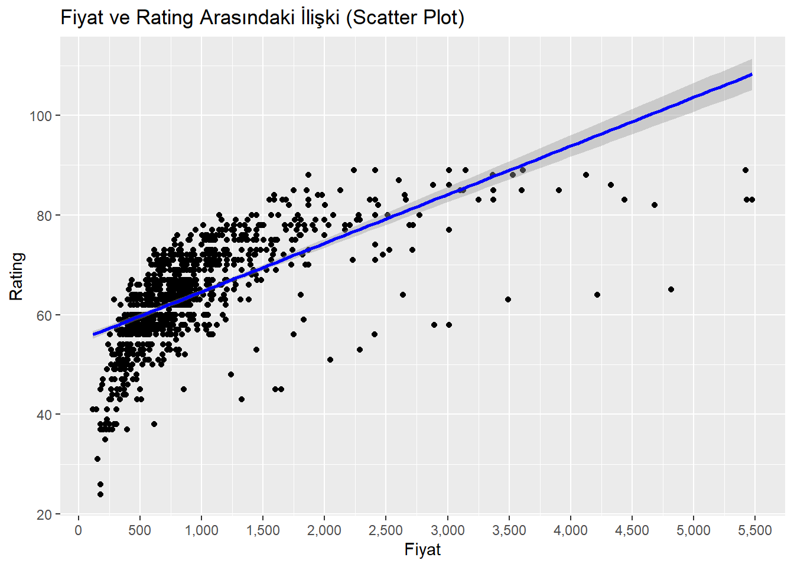

index brand
Min. : 1.0 asus :210
1st Qu.: 258.5 hp :205
Median : 507.0 lenovo :201
Mean : 505.9 dell :106
3rd Qu.: 754.5 msi : 90
Max. :1002.0 acer : 89
(Other): 90
Model
Acer 16 Predator Neo NH.QLTSI.001 Laptop (13th Gen Core i5/ 16GB/ 512GB SSD/ Win11/ 6GB Graph) : 1
Acer Aspire 3 14 A314-36M Laptop (Intel Core i3 N305/ 8GB/ 512GB SSD/ Win11 Home) : 1
Acer Aspire 3 15 A315-510P Laptop (Intel Core i3 N305/ 8GB/ 512GB SSD/ Win11 Home) : 1
Acer Aspire 3 15 A315-510P UN.KDHSI.019 Laptop (Intel Core i3 N305/ 8GB/ 512GB SSD/ Win11 Home): 1
Acer Aspire 3 A315-24P Laptop (Ryzen 3 7520U/ 8GB/ 256GB SSD/ Win11 Home) : 1
Acer Aspire 3 A315-24P NX.KDESI.003 Laptop (Ryzen 3 7520U/ 8GB/ 512GB SSD/ Win11 Home) : 1
(Other) :985
Price Rating processor_brand processor_tier num_cores
Min. : 9800 Min. :24.00 amd :267 core i5:335 6 :198
1st Qu.: 43595 1st Qu.:58.00 apple: 15 core i7:159 10 :185
Median : 61900 Median :64.00 intel:705 ryzen 5:139 8 :182
Mean : 77267 Mean :63.93 other: 4 core i3:127 4 :129
3rd Qu.: 89245 3rd Qu.:71.00 ryzen 7: 77 2 : 93
Max. :454490 Max. :89.00 celeron: 40 12 : 93
(Other):114 (Other):111
num_threads ram_memory primary_storage_type primary_storage_capacity
Min. : 0.00 2 : 1 HDD: 27 Min. : 32.0
1st Qu.: 8.00 4 : 25 SSD:964 1st Qu.: 512.0
Median :12.00 8 :402 Median : 512.0
Mean :12.19 12: 3 Mean : 610.9
3rd Qu.:16.00 16:522 3rd Qu.: 512.0
Max. :32.00 32: 36 Max. :2048.0
36: 2
secondary_storage_type secondary_storage_capacity gpu_brand
No secondary storage:976 Min. : 0.000 amd :167
SSD : 15 1st Qu.: 0.000 apple : 15
Median : 0.000 arm : 4
Mean : 4.004 intel :462
3rd Qu.: 0.000 nvidia:343
Max. :512.000
gpu_type is_touch_screen display_size resolution_width
apple : 15 False:903 Min. :10.10 Min. :1080
dedicated :360 True : 88 1st Qu.:14.00 1st Qu.:1920
integrated:616 Median :15.60 Median :1920
Mean :15.17 Mean :2004
3rd Qu.:15.60 3rd Qu.:1920
Max. :18.00 Max. :3840
resolution_height OS year_of_warranty
Min. : 768 android: 1 1 :900
1st Qu.:1080 chrome : 16 2 : 63
Median :1080 dos : 32 3 : 10
Mean :1181 mac : 15 No information: 18
3rd Qu.:1200 other : 2
Max. :2560 ubuntu : 1
windows:924
İşlemci seviyeleri arasında dikkat çekici sıklık farkları var mı?
library(ggplot2)f=table(data$processor_tier)f_data=data.frame(f) ggplot(f_data,aes(x=reorder(Var1,Freq),y=Freq,fill=Var1))+geom_bar(stat="identity")+labs(title="İşlemci Alt Modeline Gore Bar Plot Çizimi",y="Frekans",x="İşlemci Alt Modeli")
Çubuk grafik incelendiğinde, işlemci seviyeleri arasında en yaygın olanın Core i5 olduğu görülmektedir. Teorik olarak, çoğu müşterinin Core i5 performansından memnun olduğu söylenebilir.
Laptop fiyatları, işlemci markası ve GPU türüne göre nasıl değişmektedir?
ggplot(data_new, aes(x = processor_brand, y = Price, color = gpu_type)) +geom_point(alpha =0.6) +labs(title =' GPU Tipine Gore Fiyat ve İşlemci Markası İlişkisi', x ='İşlemci Markası', y ='Fiyat') +theme_minimal() +scale_y_continuous(labels = scales::dollar_format(prefix ='EUR '))

İşlemci markası ile fiyat arasındaki ilişkiyi GPU türüne göre renklendirilmiş olarak gösteren grafik
Laptop puanları, işlemci markası ve GPU türüne göre nasıl değişmektedir?
ggplot(data_new, aes(x = processor_brand, y = Rating, color = gpu_type)) +geom_point(alpha =0.6) +labs(title =' GPU Tipine Gore Rating ve İşlemci Markası İlişkisi', x ='İşlemci Markası', y ='Rating') +theme_minimal() +scale_y_continuous(labels = scales::dollar_format(prefix =''))
Çekirdek sayısı ile laptop puanları arasında, işlemci markasına göre bir ilişki var mı?
ggplot(data_new, aes(x = num_cores, y = Rating, color = processor_brand)) +geom_point() +labs(title ="Çekirdek Sayısı vs. Rating",x ="Çekirdek Sayısı",y ="Rating") +theme_minimal()
Çekirdek sayısı ile puanlar arasında doğrusal bir ilişki olduğu söylenebilir.
Fiyat ile puanlama arasında bir korelasyon var mı?
Kutu grafiği, özellikle daha yüksek kapasiteli SSD’lerin, HDD’lere kıyasla daha yüksek ve tutarlı puanlarla kullanıcılar tarafından açıkça tercih edildiğini göstermektedir.
Puanlar, işlemci markası, GPU markası ve RAM bellek kombinasyonlarına göre nasıl değişiyor?
Daha yüksek RAM kapasitelerine ve AMD ya da Intel işlemcilerle NVIDIA GPU kombinasyonlarına sahip laptoplar, genellikle daha yüksek puanlar almaktadır.
Farklı laptop markaları (örneğin Dell, HP, Lenovo) ortalama puanı nasıl etkiliyor? Hipotez: Apple gibi bazı markalar, diğerlerine kıyasla daha yüksek ortalama puanlara sahiptir.